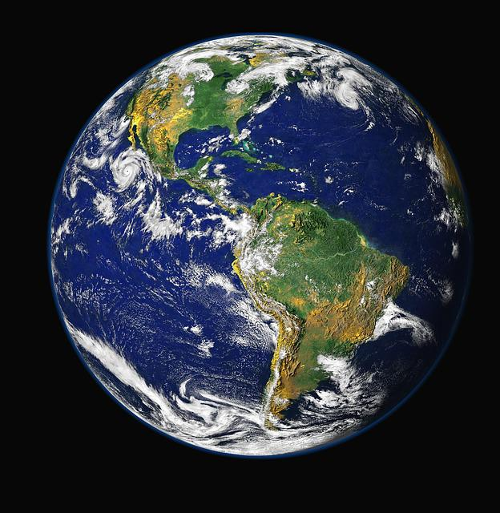
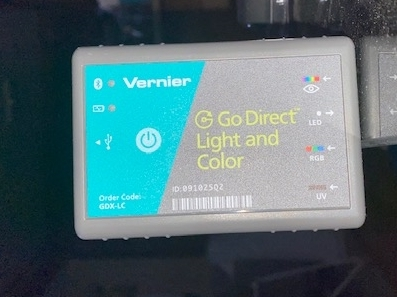

Do It! Vernier Elementary Energy Efficiency: Design an Expedition Suit
 The Challenge
The Challenge
Your challenge is to choose a remote area in the world that you would like to visit on a science expedition. First, you will learn a little bit about the climate. Then, you will use the Vernier Light and Color Sensor to collect data on how much light is reflected by different colored fabrics. You will design an expedition suit that uses the sun’s energy to keep you warm or cool.
Getting Started
Getting started using Bluetooth Connection:
- Charge your sensor for at least 2 hours before first use.
- Turn on your sensor by pressing the power button once. The LED will blink red.
- Launch Graphical Analysis.
- Click or tap Sensor Data Collection.
- Select your Go Direct sensor from the sensor choices.
Getting started using USB Connection:
- Connect the sensor to the USB port.
- Launch Graphical Analysis.
- You are now ready to collect data.
Project Steps
-
Research Your Expedition Destination
-
Prepare Your Experiment
-
Conduct Your Experiment
-
Analyze Your Data
-
Design Your Expedition Suit
Research Your Expedition Destination
To begin, you need to select your expedition destination.
- Choose a place you would like to explore and learn more about. Use a map, globe, or the internet to see where the destination is located.
- Research more about your destination's climate. While doing your research, think about how you would design your suit.
- What does your suit need to help you do: Stay warm? Stay cool?
- What does it need to protect you from? Rain? Wind? Sunburn?

Prepare Your Experiment
Set up your experiment to test the reflectivity of different materials.
- Gather a few pieces of fabric with different colors. These fabrics can include t-shirts, napkins, or even paper.
- Find an area where the sensor will stay in one place and not be touched. The sensor should always be the same distance from the fabric or paper you’re going to be pointing the sensor at. Consider having the sensor hang off the edge of the table or have it taped to an object that is above a surface.

Set up the data collection mode on Graphical Analysis.
- Click Mode to open Data Collection Settings. Change Mode to Event Based.
- Choose Selected Event as the Event Mode.
- Check the box next to Average sensor reading over 10 seconds.
- Enter Color as the Event Name and leave the Units field blank. Click Done.
Conduct Your Experiment
Using the Vernier Light Sensor, test your experiment.
Some reminders while testing out your fabrics.
- Collect data for a minimum of 10 seconds to make sure you have enough data.
- Keep the fabric/paper at the same distance when holding it under the sensor.
- Run through your fabric/paper more than once to make sure they are accurate.
Collecting Data:
- Click Collect to start data collection.
- Put the first fabric/paper under the sensor.
- Make sure there are no shadows under the tip of the sensor. If there are, move your hand around so that the shadow doesn’t fall over the sensor (look for the highest reading you can get).
- When the light level readings are constant (stay the same), click Keep. Hold the Light Sensor in place for 10 seconds while data is collected. Record the level that is constant on the Reflectivity of Light Data Sheet
- Remove the first fabric/paper and put your second fabric/paper under the sensor.
- Repeat steps 3-5 until all fabric/paper is used.
- Click Stop to stop data collection.
Analyze Your Data
After going through your experiment, review your Reflectivity of Light Data Sheet
- What did you notice about the data you collected? Do you notice a pattern between the colors of the fabric and the reflectivity, or how much light is reflected off the material? NOTE: The more reflective, the higher the number of lux.
- Which fabric would work the best in your climate?
- Take a look at all of your fabric. Rank them based on reflexibility. Based on the climate you will be exploring, which would be best for your suit?
Talk about these questions with your partner.
Design Your Expedition Suit
Using the data from your experiment, design your expedition suit.
While designing your suit; remember the climate you will be in.
- Does your suit need to help you stay warm? Stay cool?
- Does it need to protect you from rain? Wind? Sunburn?
Remember to justify your design choice by answering these questions:
- How did you choose that fabric/color?
- How will your design help you in your expedition destination?